Digital Public Administration factsheet 2023
The Netherlands
1 Interoperability State-of-Play 4
2 Digital Public Administration Political Communications 8
3 Digital Public Administration Legislation 14
4 Digital Public Administration Infrastructure 19
5 Digital Public Administration Governance 28
6 Cross-border Digital Public Administration Services for Citizens and Businesses 31

1
Interoperability State-of-Play
1
Interoperability State of Play
In 2017, the European Commission published the European Interoperability Framework (EIF) to give specific guidance on how to set up interoperable digital public services through a set of 47 recommendations divided in three pillars. The EIF Monitoring Mechanism (MM) was built on these pillars to evaluate the level of implementation of the framework within the Member States. Whereas during the previous, the MM relied upon three scoreboards, the 2022 edition includes an additional scoreboard on cross-border interoperability, assessing the level of implementation of 35 Recommendations. The mechanism is based on a set of 91 Key Performance Indicators (KPIs) clustered within the four scoreboards (Principles, Layers, Conceptual model and Cross-border interoperability), outlined below.

Source: European Interoperability Framework Monitoring Mechanism 2022
Each scoreboard breaks down the results into thematic areas (i.e. principles). The thematic areas are evaluated on a scale from one to four, where one means a lower level of implementation and four means a higher level of implementation. The graphs below show the result of the EIF MM data collection exercise for the Netherlands in 2022, comparing it with the EU average as well as the performance of the country in 2021.
Source: European Interoperability Framework Monitoring Mechanism 2022
The Netherlands’ results in Scoreboard 1 show an overall good implementation of the EIF Principles. Principle 3 (Transparency) is the only Principle below the EU average, highlighting that the country should further ensure internal visibility and provide external interfaces for European public services. Areas of improvements are concentrated in the Principles 7 (Inclusion and Accessibility) and 9 (Multilingualism) for which the score of 3 shows an upper-medium performance in the implementation of corresponding recommendations. Indeed, the use of e-accessibility specifications to ensure all public services are accessible to all citizens, including persons with disabilities, the elderly and other disadvantaged groups, leveraging commonly agreed e-specifications (Principle 7 – Recommendation 14) and the use of information systems and technical architectures that cater for multilingualism when establishing a European public service (Principle 9 – Recommendation 16) are partial and could be bettered to reach the maximum score of 4.
Source: European Interoperability Framework Monitoring Mechanism 2022
The Dutch results for the implementation of interoperability layers assessed for Scoreboard 2 show an excellent overall performance with all criteria scoring 4, in line with the EU average. Semantic interoperability represents an area of possible improvement. In this context, the Netherlands should further enhance the way it perceives data and information as a public asset that should be appropriately generated, collected, managed, shared, protected and preserved (Recommendation 30).
Source: European Interoperability Framework Monitoring Mechanism 2022
The Netherlands’ scores assessing the Conceptual Model in Scoreboard 3 show a good performance in the implementation of recommendations associated with all components, except the Conceptual model itself. Particularly, the country could improve its score by further using the conceptual model for European public services to design new services or reengineer existing ones and reuse, whenever possible, existing service and data components (Recommendation 34).
Source: European Interoperability Framework Monitoring Mechanism 2022
The available results of the Netherlands concerning Cross-border interoperability in Scoreboard 4 show a high performance of the country in 7 indicators. Particularly, even though the lack of data for some indicators does not allow for a complete analysis, the Netherlands has a high performance above the EU average in Principle 10 (Administrative simplification) and Security and Privacy. However, the country still has margin for improvement in relation to Principle 7 (Inclusion and Accessibility) and should ensure that all public services are accessible to all citizens, including persons with disabilities, the elderly and other disadvantaged groups. For digital public services, public administrations should comply with e-accessibility specifications that are widely recognised at European or international level (Recommendation 14).
Additional information on the Netherlands’ results on the EIF Monitoring Mechanism is available online through interactive dashboards.
Curious about the state-of-play on digital public administrations in this country? Please find here some relevant indicators and resources on this topic: |

2
Digital Public Administration Political Communications
NL Digibeter: Digital Government Agenda
The NL Digibeter:Digital Government Agenda is closely connected to the broader Dutch Digitalisation Strategy. The Digital Government Agenda is drawn up in close cooperation with other levels of government and key public and private partners. It is also connected to the Tallinn declaration on eGovernment.
The agenda is aimed at making optimal use of the opportunities that digitalisation offers, while it safeguards public values, like autonomy of individual citizens and promoting inclusion.
The Digital Government Agenda focuses on:
The main implementation milestones include:
 Value Driven Digitalisation Work Agenda
Value Driven Digitalisation Work Agenda
With the formation of a new cabinet in January 2022, the National Digitalisation Strategy was replaced by a new Priority Framework for Digitalisation, which sets out four priority areas for digitalisation in the Netherlands: strengthening the foundations for digitalisation; digital economy; digital government and digital society. These overarching government-wide priorities have been worked out in separate agendas. The Value Driven Digitalisation Work Agenda of 4 November 2022 puts public values at the core of the digital transition and tackles topics such as online identity and data control, rule of law, digital inclusion, privacy, democracy, equal treatment and policies for a digital government that works for all. The agenda covers digital government and parts of the foundations for digitalisation of the priority framework. The work on an inter-administrative Agenda for a Digital Society is ongoing and will cover crosscutting digitalisation issues related to tackling societal challenges.
iStrategy
In September 2021, the Ministry of the Interior and Kingdom Relations submitted the I-strategie Rijk 2021-2025 to Parliament [Kamerstuk 26643, nr. 779 | Overheid.nl > Officiële bekendmakingen (officielebekendmakingen.nl)]. This I-strategy is aimed at the central government and it describes the generic activities of the CIO council (the interdepartmental council of Chief Information Officers). The agenda deals with ten different themes related to: reliable information and data; well-functioning, consistent and robust ICT; knowledge and skills; and strategic I-governance. With the letter of 15 July 2022 [Kamerstuk 26643, nr. 899 | Overheid.nl > Officiële bekendmakingen (officielebekendmakingen.nl)], the Parliament was informed about the progress.
Policy Framework for the Further Development of the Digital Government Infrastructure
The Policy Framework for the Further Development of the Digital Government Infrastructure was published in connection with the publication of NL DigiBeter2.0. The policy framework includes some principles aimed to develop the policy for the digital government basic infrastructure and to further develop the generic functions of the digital government basic infrastructure. The generic functions are based on agreements, standards and building blocks.
Open Government Vision and Action Plan
The Netherlands has a long history of promoting open data. Closely interlinked with the 2017 digital ambitions, the Open Government Vision and Action Plan were presented to the Parliament on 1 September 2013. The vision paper described different developments around the topic of open government and underlined the importance of more openness from an economic, democratic and societal perspective. Three main themes were addressed in the vision paper: more transparency around government activities, government responsiveness to initiatives from society, and government accountability. The main principle was an active disclosure of information.
The fourth Action Plan for Open Government 2020-2022 contains commitments by the government and civil society network partners to promote openness in the Netherlands. A broad range of parties was involved in designing the Open Government Action Plan 2020-2022. The action plan is based on the ideas, suggestions and lessons learned from stakeholder meetings, discussions with partners inside and outside government, the experiences from previous action plans and the reviews of the Independent Review Mechanism (IRM).
The fourth National Open Government Action Plan includes the lessons learned from the first three action plans, stakeholder feedback and IRM-reports.
National Data Strategy
The governmental agenda on data strategy, NL Digitaal, was published in March 2019 and updated in April 2020. The agenda focuses on the flow of data in society and is aimed at optimal and responsible use of data in public administration bodies. The agenda aims at data driven approaches for solving societal issues, promoting public values, improving the quality of data and the efficient reuse thereof, sharing knowledge about data driven working, investing in people, organising and changing culture.
In 2021, the Dutch Inter-administrative Data strategy was published. The strategy outlines how all levels of government can tackle societal challenges using data in an effective and responsible way. The data strategy also contains initial suggestions for data system functions that should be available to all government bodies. Lastly, the data strategy elaborates on the need for orchestration of responsible data sharing.
eID Progress
The purpose of the Dutch eID programme is to enable user-friendly, safe and reliable digital interaction between citizens and businesses and the government. The Dutch Parliament was updated about the progress of the proposal for the eID programme and the European Digital Identity Framework in July, November and December 2022 and in February 2023.
 Netherlands Cybersecurity Strategy 2022-2028
Netherlands Cybersecurity Strategy 2022-2028
The Netherlands Cybersecurity Strategy 2022-2028 was published in October 2022. The strategy describes the government’s vision on the security of the digital society and the role played by public authorities, businesses and the public within it. It is accompanied by an action plan that sets out specific actions aimed at making the Netherlands more secure.
The strategy sets out aims and actions across four pillars. The first pillar is enhancing the cyber resilience of the government, businesses and civil society organisations. The second is providing secure and innovative digital products and services. The third is countering cyber threats posed by states and criminals, and the fourth is ensuring sufficient cybersecurity expertise, strengthening education on cybersecurity and boosting public cyber resilience.
Government Information Security Baseline
In October 2018, a policy letter was sent to the Parliament concerning measures to improve information security in the public sector. As a follow up, the Government Information Security Baseline (Baseline Informatiebeveiliging Overheid, BIO) has been effective since 1 January 2020. The BIO is the basic information security framework encompassing all layers of the public sector: central government, municipalities, provinces and water authorities.
Dutch Base Registries System
The system of base registries has been operational for a decade. In June 2019, the Court of Audit published the investigation into the base registries system operation and issued an advice to the Minister of the Interior and Kingdom Relations. In response to this advice and the discussions in Parliament, the government issued letters about the further development of the system, including its intentions to set up a central reporting point and develop a vision on the future of the system. In November 2020, the government issued a letter to Parliament about the current developments and further improvement of the system of base registries, including a central hotline for reporting errors in the registrations and the latest scheme for the base registries and its interconnections. In January 2021, the central reporting point (Meldpunt Fouten in overheidsregistraties, MFO) was realised. The MFO helps citizens, companies and organisations solve problems with regard to government registries.
No political communication has been adopted in this field to date.
Approach to Digitalisation in the Judiciary
The Ministry of Justice and Security published its approach to digitalisation in the criminal justice domain. This approach addressed the need for improving information through the digitalisation of procedural documents throughout the entire criminal justice chain, both for internal use and for exchanges with third parties.
Digital Agenda for Primary and Secondary Education
The Ministry of Education published the Digital Agenda for Primary and Secondary Education. The agenda was aimed at strengthening the innovative capacity of schools and teachers, digital literacy among pupils and teachers, innovative educational resources, infrastructure and ethics/public values.
Public Values and Technology in Society
In March 2018, the Minister of the Interior and Kingdom Relations sent a letter to the Parliament in reply to the Rathenau Institute's reports Urgent Upgrade - Guaranteeing Public Values in the Digital Society and Human Rights in the Robot Age. In both reports, the Rathenau Institute provided the cabinet with recommendations on how to deal with the impact of technology on important public values – in particular human rights – in our society.
On 10 October 2019, the Ministry of the Interior and Kingdom Relations published a Policy Letter on Artificial Intelligence (AI). The letter provides an overview of the opportunities and risks of AI for public values that are based on human rights; it also describes existing and future policy measures. The policy letter was published in close connection to the broader Strategic Action Plan on Artificial Intelligence (SAPAI) published by the Ministry of Economic Affairs and Climate Policy . Both documents have been prepared in close cooperation between the Ministry of Economic Affairs and Climate Policy, the Ministry of Justice and Security, and the Ministry of the Interior and Kingdom Relations.
In October 2019, the Ministry of the Interior and Kingdom Relations published a collection of essays named ‘Appropriate use of data in public space’. The aim was to identify possible challenges related to data policy derived from the use of different new technologies (AI, Internet of Things, blockchain) and to establish a shared view on these issues. In November 2020, a letter was sent to the Parliament about the use of algorithms.
Netherlands AI Coalition
Created in the frame of the Dutch Digitalisation Agenda, the Netherlands AI Coalition (NL AIC) aims at substantiating and stimulating AI activities in the Netherlands. The NL AIC is a public-private partnership with over 400 organisations in which the government, the business sector, educational and research institutions, as well as civil society organisations collaborate to accelerate and connect AI developments and initiatives. The ambition is to position the Netherlands at the forefront of AI knowledge and application for prosperity and well-being, with due observance of both Dutch and European standards and values.
To strengthen the position of the Netherlands and to make the most of the opportunities, a long-term programme called AiNED has been drawn up by the NL AI Coalition. The programme accelerates the development and application of AI so that the Netherlands can reap the economic and social rewards of AI and keep pace with other leading countries. The Netherlands has invested EUR 276 million in the first part of this programme, focusing on innovation AI projects and labs on ethical, legal and societal aspects (ELSA labs). Ahead of this programme several Ministries, including the Ministry of the Interior and Kingdom Relations, funded an Nederlandse Organisatie voor Wetenschappelijk Onderzoek (Dutch Research Council, NOW) call in the Nationale Wetenschapsagenda (Dutch Research Agenda, NWA) programme for ELSA labs. The Ministry of the Interior and Kingdom Relations subsidized the ELSA labs debts.
The Netherlands is also working on a public European Digital Innovation hub, an important connection to provide knowledge and instruments to those involved in developing and implementing innovative, digital solutions. The Netherlands supports the development of labs and innovation hubs on AI. Good examples of such initiatives are the Civic Lab, focusing on human-centric AI and the ELSA Lab on personal finance, poverty and debts, in connection with the NL AIC.
As part of the Dutch Digitalisation Agenda, the Dutch Blockchain Coalition (DBC) is a joint venture between partners from the government, knowledge institutions and industry. The DBC's mission is to promote reliable and robust blockchain technologies, create the best possible conditions to allow blockchain applications to arise, and utilise blockchain as a source of trust, welfare, prosperity and security for the Dutch society. For this mission, the DBC is mainly a catalyst and facilitator that activates and connects within a broad public-private network.
In both the AI and blockchain Coalitions the application of new technologies in public administration is addressed. In connection with the two main coalitions mentioned above, the Dutch government focuses on building a Community of Practice, providing guidelines and instruments to develop and deploy new technology solutions – mainly AI and blockchain – to solve societal challenges and improve public services. Use cases are stimulated using a variety of instruments, such as hackathons, pre-commercial procurement and buyer groups.
No political communication was adopted in this field to date.
 Cloud Computing
Cloud ComputingCloudbeleid
The Ministry of the Interior and Kingdom Relations published a new policy for the use of cloud solutions by the national government in August 2022 [Kamerbrief Rijksbreed cloudbeleid 2022 | Kamerstuk | Rijksoverheid.nl]. This policy contains conditions for keeping information safe, avoiding a vendor lock-in and benefiting from new technologies.
No political communication was adopted in this field to date.
No political communication was adopted in this field to date.
5G and the Netherlands Authority for Consumers & Markets
In December 2018, the Netherlands Authority for Consumers and Markets (ACM) released a paper on 5G, the next generation of mobile networks. The paper covers regulation and the regulator’s role with regard to 5G. Throughout the paper, ACM explains where 5G overlaps with its duties and highlights that market participants need to make choices concerning the roll-out of the 5G-network, and the ACM would like to help them in that development process within the boundaries of its regulatory framework.
Connectivity Action Plan
In July 2018, the Ministry of Economic Affairs and Climate Policy published the Connectivity Action Plan, which refines the objectives of the Dutch Digitalisation Strategy and outlines the government’s efforts to remain the European digital leader. Its aim is to provide high-quality connectivity that can serve a wide range of demands and is available at competitive prices anytime and everywhere. In this Plan, the Dutch government supports the EU Gigabit Society targets. All households should have the opportunity to access broadband networks of at least 100 Mbps and a vast majority should be taking advantage of 1 Gbps by 2023.
No political communication was adopted in this field to date.

3
Digital Public Administration Legislation
Digital Government Law
The Digital Government Law (wet Digitale Overheid) was passed by the Senate on 21 March 2023 and will enter into force on 1 July 2023. The main objective of the draft law is to ensure safe access of Dutch citizens and businesses to (para-) governmental agencies. The law also sets minimum mandatory standards.
Administrative Law
Legislation on Administrative Law contains general rules concerning the relationship between the government and individual citizens, companies and the like. The 2004 amendment of the law regulates administrative electronic traffic (mod. 2004). Currently, further modification has been proposed to establish the right for digital interaction with government. The proposal was passed by the Senate on 9 May 2023.
Electronic Announcement Act
The Electronic Announcement Act established the obligation for national government official publications to be published on the internet rather than on paper (official journals, local papers etc.). The aim of the latest amendment, that came into force on 1 July 2021, is to define the obligation for administrative bodies (including local and regional government bodies) to publish all official announcements and publications on officielebekendmakingen.nl, and also to arrange a digital e-mail service informing citizens about relevant announcements and publications that relate to their specific living environment.
No legislation was adopted in this field to date.
Government Information (Public Access) Act
Freedom of Information legislation was first adopted in the Netherlands in 1978. It was replaced by the Act of 31 October 1991 on Public Access to Government Information. Under the 1991 Act, any person can request information related to an administrative matter if it is contained in documents held by public authorities or companies carrying out work on behalf of a public authority. A revised version of the law entered into force on 1 May 2022. Some of the changes include shortening of the time period to respond to information requests and putting more emphasis on active disclosure of information on a new government website (PLOOI).
Reuse of Public Sector Information
The Directive on open data and the re-use of public sector information, also known as the Open Data Directive (Directive (EU) 2019/1024) entered into force on 16 July 2019. It replaces the Public Sector Information Directive, also known as PSI Directive (Directive 2003/98/EC) dating back to 2003 and was subsequently amended by Directive 2013/37/EU. Before the summer, the proposal for transposition into national law will be sent to the Dutch Parliament. As part of the Open Data Directive, the preparation for the implementation of the High Value Datasets Implementing Regulation has launched. Various stakeholders have been asked to carry out an impact analysis.
eIDAS Regulation
The Regulation on electronic identification and trust services for electronic transactions in the internal market (EU Regulation 910/2014) entered into force on 1 July 2016 and sets standards for electronic identification and trust services for electronic transactions in the single market. The national eIDAS Implementation Act has been applicable since March 2017. The act implements parts of the eIDAS Regulation by means of changes in existing Dutch laws such as the Telecommunications Law, Civil Law and General Administrative Law. The eID part will be transposed in the Digital Government Law.
The Digital Government Law (wet Digitale Overheid) was passed by the Senate on 21 March 2023 and will enter into force on July 1, 2023. The main objective of the draft law is to ensure safe access of Dutch citizens and businesses to (para-) governmental entities. The law also indirectly regulates mandatory minimum standards for internet security.
General Data Protection Regulation
The General Data Protection Regulation (EU) 2016/679 has been applicable as of 25 May 2018. It ensures that the same privacy rules apply across the European Union. In the Netherlands, the GDPR has been transposed into law.
Base Registries System
The system of base registries consists of 10 registries and services for data exchange. Each base registry is regulated by specific legislation, following 12 common requirements agreed to in 2003.
One of the base registries is the Personal Records Base Registry and BRP law. Applicable since 2015, it sets the following objectives: i) promoting the efficient provision of personal data; ii) modernising the registry; and iii) managing the corresponding legal protection and privacy of individuals. It describes how the registration should be organised and who should be responsible for managing data and central facilities. Additionally, the legislation describes the specific information personal records must include and the registration process. This law details the information the registry can provide.
Trade Register Act
Another important base register is the Trade Register, the register for companies and legal persons. It is regulated by the Trade Registry Act. This act describes the fundamentals for the creation of the Business Register (for instance, promoting legal certainty in trade), defines who is in charge of the register (the Chamber), and what kind of companies are registered. It details the information about companies, the person to whom they belong, legal persons, and other data. The Act also includes articles regarding the provision and the use of data (use by administrative bodies, one-time data provision, etc.), the change of data already entered in the register and data quality (controls to ensure the availability, performance, security, accuracy and completeness of data).
Unique Identifying Numbers Law
Since 1 April 2013, the Procurement Act 2012 has become applicable to all procurement processes conducted by (semi) public organisations in the Netherlands. More information is available on the PIANOO portal.
The EU eInvoicing Directive 2014/55/EU was implemented in national legislation by means of a Decision which amended the Dutch Procurement Law and the Dutch Procurement Law for the Defence and Safety Domain. The amendment of the procurement law is known as eInvoicing legislation.
Furthermore, in the Netherlands B2G eInvoicing has been mandatory since January 2017 for central government agencies. Since 18 April 2019, all government bodies were obliged to accept and process eInvoices.
Services Act
The Services Act (Dienstenwet) simplified the business activities for service providers in all EU Member States. It implemented the EU Services Directive which took effect on 28 December 2009, and incorporated the main rules from the EU Services Directive into Dutch law. It introduced the right for entrepreneurs to interact with government digitally for a specific set of services.
SUWI Act
The SUWI act defines mandatory digital interactions between citizens and government in the employment and income domain, in particular with the Employee Insurance Agency (UWV).
No legislation was adopted in this field to date.
No legislation was adopted in this field to date.
No legislation was adopted in this field to date.
 Cloud Computing
Cloud ComputingCloudbeleid
The Ministry of the Interior and Kingdom Relations published a new policy for the use of cloud solutions by the national government in August 2022 [Kamerbrief Rijksbreed cloudbeleid 2022 | Kamerstuk | Rijksoverheid.nl]. This policy contains conditions for keeping some information safe, avoiding a vendor lock-in and benefiting from new technologies.
Upcoming legislation on smart devices security
A communication from the Netherlands Enterprise Agency announced that the Dutch Parliament is currently discussing to introduce minimum requirements to ensure the digital security of devices connected to the internet –IoT devices. These new rules will apply to all wireless devices and products that communicate via and are connected to the internet, such as routers, security cameras, smart thermostats, fridges, lamps, doorbells, etc. This legislation is expected to come into force on 1 July 2024.
No legislation has been adopted in this field to date.
No legislation has been adopted in this field to date.
No legislation has been adopted in this field to date.
Experimental Law on Self-Driving Vehicles
On 1 July 2019, the Experimental Law on Self-Driving Vehicles was enacted, enabling public road tests involving self-driving under defined conditions. Prior to the approval from the Minister of Infrastructure and Water Management, applications for such tests were assessed by the Netherlands Vehicle Authority (RDW), the police, road authorities, and the Dutch Institute for Road Safety Research (SWOV). They verify whether the prevention of traffic safety risks is sufficiently warranted. This aims to place the Netherlands at the forefront among the countries that are getting ready for self-driving transport.

4
Digital Public Administration Infrastructure
Overheid.nl: Government Portal
The Overheid.nl portal, which translates to government.nl, was introduced in the first eGovernment action plan of 1999. It contributes to transparency in public administration. Overheid.nl serves as the central access point for all information relating to government organisations. The portal provides information about services for persons and businesses, divided by themes, life events and location. It provides all national legislation, official publications, local and regional legislation and offers internet consultation services. The portal links to EU legislation, the Open Data Portal and the common website of the ministries, with documents, publications and news items on all domains. The portal also offers access in the form of a personalised environment. In 2022, there were a total of 45 million visits to the portal.
Ondernemersplein: Business Portal
The Ondernemersplein (business.gov.nl for English speakers) portal is the point of contact for businesses and entrepreneurs in areas such as legislation, subsidies and permits. The information provided covers all levels of government. It is made available through various channels (websites, email, telephone and chat) and focuses on the issues and needs of the business community. In 2022 there were a total of 10.3 million visits to the portal. 3.2 million of these visitors accessed the international site business.gov.nl. As regards the Dutch version, 76% of users were positive about the website, the percentage increasing to 84% for business.gov. Moreover, the portal includes a higher level forum in which entrepreneurs discuss matters of direct concern.
Cooperating Catalogues
The Cooperating Catalogues is a standard to provide citizens and businesses with a one-stop-shop entry for government products and services, wherever they may start searching. Cooperating Catalogues is a standard for publishing and exchanging metadata about products and services. The information form Cooperating Catalogues will be available on the portals overheid.nl and ondernemersplein.nl, as well as on the websites of participating government organisations.
Mijnoverheid.nl: Portal for Personal Services
Mijnoverheid.nl is a portal for personal services in which citizens can access personalised information and digital messages from the government. As of the end of 2020, 8.5 million accounts had been activated, a 6.9% increase compared to the previous year. The portal offers the following functionalities:
Digipoort
Through Digipoort, the electronic exchange portal for businesses, government organisations and businesses can quickly and efficiently exchange structured digital information. Every connected business can exchange digital information with the government.
Digipoort complies with the highest criteria for trust, availability and security. Messaging over Digipoort is secured by a government certificate. This is how the authenticity of messages is secured and public bodies and businesses know where messages originate from and are delivered. The certificate also secures that messages cannot be altered.
Digipoort is a messaging hub supporting large messages. Standards like eDelivery are being used to make sure the message will arrive as intended.
Thanks to Digipoort, the administrative burdens for businesses and government decreased significantly. Digipoort is used in a variety of environments, like finance, logistics, transport, social security, etc.
Dutch Open Data Portal
The Open Data Portal provides an overview of all available datasets held by governmental organisations in the Netherlands. The portal and registry are initiated and governed by the Dutch Ministry of the Interior and Kingdom Relations. The Netherlands Publication Office (KOOP) is responsible for site maintenance and development. Over 185 Dutch government organisations list their available data in about 16,051 datasets. The data portal is updated daily by harvesting processes, API updates and individual users. The DCAT standard for data exchange is used and has been extended for use in the Netherlands (DCAT-AP-NL). Version 1.1. is currently in use. The data registry is based on the CKAN software platform and Drupal 8. Currently, over 1194 Dutch government data items are available in English.
No particular infrastructure in this field was reported to date.
National API Strategy
In order to facilitate the adoption of the API technology within the government, the Netherlands has developed a Dutch API Strategy. Parts of the strategy are informative and parts are normative and have been adopted as a national standard (Rest API Design Rules and the NL GOV Assurance profile for OAuth 2.0).
The Developer Overheid portal was launched in 2019 to provide access to all information targeted at IT developers within government and all subcontractors. In particular, this website is being positioned as an overview of the available APIs within the government.
Diginetwerk
Diginetwerk connects (existing) physical government organisation networks to one another. This results in a single closed virtual government network. Within that network, government bodies are able to securely exchange data. Diginetwerk provides connectivity and increases efficiency, because one organisation requires just one connection to be able to exchange data with various government organisations.
Trans European Services for Telematics between Administrations
The Netherlands makes frequent use of the Trans European Services for Telematics between Administrations (TESTA) network as the main cross border infrastructure to communicate digitally among EU agencies, institutions and Member States.
Data Exchange Services of the Base Registers System
The smart exchange of data from the system of base registers enables the government to operate more efficiently and to improve its service. Four system services support base registries in their aim to offer their catalogue of products and services to users in a consistent way. The system of base registries identifies the following system services, namely, Digilevering, Digimelding, Digikoppeling and Stelselcatalogus:
Standard Business Reporting
The Standard Business Reporting (SBR) provides governments and businesses with an unequivocal, cost-effective, secure and adaptable method for the exchange of business information between organisations in a reporting chain. With SBR the Dutch Government and businesses in the Netherlands have come to an agreement regarding the way accountability information is being reported. This leads to an undisputed set of financial information.
The SBR is already operational. The following organisations accept or require the SBR: Tax and Customs Administration (e.g. Value Added Tax, Corporation Tax Return), Chamber of Commerce (annual reports), Central Statistical Office (production and investment statistics), and banks (annual credit reports). In 2022, 61 reporting types based on the SBR framework were in use, adding up to a total of 48 million SBR messages exchanged.
DigiD
In the eID approach, public and private authentication solutions coexist. The public solution for citizens (DigiD) is reserved for G2C authentications. The policy aims at strengthening DigiD in two ways: on the one hand by introducing new certificates on ID cards and driving licences to have a higher level of trust, and on the other hand by accepting private authentication solutions under strict conditions in order to promote resilience.
DigiD enables individuals to identify themselves for digital services. DigiD offers security: you know who you are dealing with. Using DigiD, the Citizen Service Number (BSN) of the person logging in is disclosed. This makes it possible to check the information already on file for that individual and offer personalised services. At this moment, logging in involves a user name and a password, and in some cases a text message for further verification. In July 2017 the DigiD App was launched.
DigiD is available at three levels:
Although it is not mandatory by law yet, DigiD has become the main authentication system for citizens.
DigiD Authorise
DigiD Authorise enables users of a digital service to authorise someone to act on their behalf. This can come in handy if the user is not familiar with using computers or digital services or wants to defer the task to someone who is more knowledgeable in the subject matter. DigiD Authorise users do not need to disclose their own DigiD to the person they authorise and grant the authorisation only for one specific service. In 2022, companies and organisations made 12.689 requests for the use of DigiD authorisations.
Administrative Facility BSN
The administrative facility citizen service number (Beheervoorziening burgerservicenummer, BV BSN) is in charge of generating, issuing, managing and consulting the citizen service number (BSN). The BV BSN controls access to the identifying data in the underlying authentic registries (Municipal Key Registry Personal Data, or GBA in Dutch, and the Non-Residents Records Database). It also controls access to the verification registries for identity documents to verify identity at the counter.
eRecognition
eRecognition (eHerkenning) is the eIdentity Trust Framework enabling authentication for government agencies and businesses. With an eHerkenning authentication token, users can log in to online services offered by government agencies and businesses. Authentication tokens are technology neutral; therefore, a range of options is available for users (e.g., SMS, OTP, certificate, user name/password). The four assurance levels provided by STORK are reused within eHerkenning in combination with a registry of mandates: users have to be mandated by their organisation for the tasks they are allowed to perform. At the end of 2021, a total of 0.75 million eRecognition means had been issued, accepted by over 500 public organisations where almost 17 million authentications were made.
PKIoverheid
The Public Key Infrastructure (PKI) for the government (PKIoverheid in Dutch) facilitates reliable digital communication inside and with the Dutch government. PKIoverheid is a very high-grade, safe infrastructure, based on digital certificates. A PKIoverheid certificate is used for: website security, remote authentication, legally valid electronic signatures and encryption of electronic messages.
PIANOo
The government procures around EUR 73 billion worth of work, services and supplies every year. PIANOo, the Dutch Public Procurement Expertise Centre, was set up to professionalise procurement and tendering in all government departments, with a view to improving efficiency and compliance with the rules. Professional procurement can contribute to successful policy and offers value for taxpayers' money. PIANOo brings procurement and tendering experts together, pools knowledge and experience and provides advice and practical tips. The Expertise Centre also fosters dialogue between public contracting authorities and private sector companies. PIANOo works for and with a network of around 3 500 public procurement and tendering professionals. PIANOo is part of the Dutch Ministry of Economic Affairs and Climate Policy.
Tenderned
Tenderned is the online marketplace for public procurement in the Netherlands. Tenderned supports the entire tendering procedure for all contracting (central, regional and local) authorities and suppliers. It is a key instrument in meeting EU objectives for eProcurement and automatically publishes contract notices that exceed the EU threshold on Tenders Electronically Daily (TED). Tenderned is administered by PIANOo.
NLCIUS
The NLCIUS is the development and enactment of a national derivative (substandard) of the European standard CIUS. The NLCIUS is maintained by Standardisation Platform eInvoicing (STPE). Furthermore, the STPE supports and stimulates the implementation and use of the European Norm and the technical implementation of eInvoicing solutions within sub-central government bodies (provinces, municipalities and water authorities). More information on eInvoicing is available here.
The Netherlands relies on the private sector for the ePayment infrastructure. Many national and international ePayment solutions are available. Currently, the most widely used online ePayment solution is iDeal. iDeal allows customers to make online payments using direct transfer from their bank account.
iDeal is a Dutch private sector product, and all major banks participate in the initiative (ABN AMRO, ASN Bank, bunq, ING, Knab, Rabobank, RegioBank, Revolut, SNS, Svenska Handelsbanken, Triodos Bank, Van Lanschot). About 130 000 online shops and other organisations offer iDeal as a payment method. There are currently more than 50 million iDeal transactions every month.
RADIO
The National Academy for Government Digitisation (RADIO) offers courses and various digital learning forums for policymakers to gain more insight into and gain experience with digitisation and computerisation.
NORA
The purpose of the Netherlands Government Reference Architecture (Nederlandse Overheid Referentie Architectuur, NORA) is to be a guiding and driving tool. It contains frameworks and existing agreements for the lay-out of the Dutch governmental information management system. Realising services within the scope of these frameworks and agreements ensures smooth cooperation with other services, and optimal re-use of existing solutions. All government parties have endorsed the NORA. (NORA 3.0). Through the NORA, their organisations know the relevant agreements needed for cooperation and improvement of their services. By adhering to the design principles and standards, IT solutions meet the cohesion and standardisation demands. The NORA provides a framework for eGovernment components acknowledged by all stakeholders. Partners can use it to accelerate development in their organisations to a common framework. For the use of mandatory and recommended open standards, the NORA maintains a persistent link to the standards lists of the Standardisation Forum.
‘User Needs First’ Community
Gebruiker Centraal (loosely translated as ‘User Needs First’) is a community of professionals working on digital government services. The project strives for a more user-friendly digital government for everyone, also people with functional impairments. It promotes and share (practical) knowledge about the use of plain language. Furthermore, it provides tips and tricks for making governmental websites and processes more accessible. Within this project there are multiple communities. Each community has a certain subject it is interested in and shares knowledge about. Examples of these subjects are plain language, customer experience and design thinking. People that participate in these communities work at various levels of government (national, regional and local).
Open Standards
The Dutch government promotes open standards to ensure interoperability, supplier independency and increased internet security. In the Netherlands, some open standards are mandatory on a ‘comply or explain’ basis, while some internet standards will be legally mandatory in the upcoming Digital Government Law (wet Digitale Overheid) or all public services. Others are recommended. The Standardisation Forum has published a list of open standards. To ensure the use and adoption of open standards, such as electronic exchange and internet security. The Dutch government can rely on the support and advice of the Standardisation Forum.
eIDAS Koppelpunt
The eIDAS infrastructure has been functional since eIDAS was up and running. The Netherlands strives to connect to notified eID means within the shortest time possible in order to increase traffic. Dutch inbound traffic is rapidly increasing since many countries have been able to use their eID mean in the Netherlands.
System of Base Registries
The smart exchange of data from the system of base registries enables the government to operate more efficiently and to improve its service.
From 2000 onwards, work has been done to realise the current operational system of 10 base registries, each anchored in legislation according to 12 agreed common principles. Already in 2003, principles were agreed for the selection of base registries, and the requirements for the legislation for each base registry.
The interconnection between Dutch registries has been established and the volumes of data exchange is steadily increasing. The GDI monitor visualises the number of users connected to base registries and the amount of messages sent per year.
Furthermore, consistency between registries is being monitored. Six base registries are partly or fully available as open data: BAG, BRV, BRK, BRT, BGT. The open geodata sets are available in the PDOK platform.
Four system services, Digikoppeling, Digilevering, Digimelding, and Stelselcatalogus, support the base registries and are described under the heading ‘data exchange’.
The systems of base registries comprise the following registries:
The Policy Administration (formerly the BLAU Base Registry of Wages, Benefits and Insured People in the Netherlands) has been appointed as sector registration. A description of the data from the Policy Administration is available as Linked Open Data in the System Catalogue.
Amsterdam AI Registry
The cities of Amsterdam and Helsinki (Finland) have launched open AI registries that track how algorithms are being used in the municipalities with the aim to ensure that the AI used in public services operates on the same principles of responsibility, transparency, and security as other local government activities; and to improve both the availability of services and the experiences of customers.
No digital public administration infrastructure has been adopted in this field to date.
No infrastructure was in this field to date.
No infrastructure was reported in this field to date.
No infrastructure was reported in this field to date.
No infrastructure was reported in this field to date.
No infrastructure was reported in this field to date.
 TechLeap.nlTechLeap.nl helps quantify and accelerate the Dutch tech ecosystem by creating the optimal climate for tech companies to launch programs and initiatives for improving access to capital, market and talent. Techleap.nl is making the Netherlands home for tomorrow's tech leaders. One of the chief instruments it offers is the Finder, which you can use to explore the ecosystem and find start-ups, scale-ups, investors, corporations, accelerators, service providers, and more.
TechLeap.nlTechLeap.nl helps quantify and accelerate the Dutch tech ecosystem by creating the optimal climate for tech companies to launch programs and initiatives for improving access to capital, market and talent. Techleap.nl is making the Netherlands home for tomorrow's tech leaders. One of the chief instruments it offers is the Finder, which you can use to explore the ecosystem and find start-ups, scale-ups, investors, corporations, accelerators, service providers, and more.

5
Digital Public Administration Governance
For more details on the Netherlands’s responsible bodies for digital policy and interoperability, its main actors, as well as relevant digital initiatives, please visit the NIFO collection on Joinup.
Ministry of the Interior and Kingdom Relations
With the inception of the present cabinet on 10 January 2022, a Minister for Digitalisation, Mrs. Alexandra van Huffelen, has been appointed. Digital policies, however, are carried out in various departments revolving around the Ministry of the Interior and Kingdom Relations (BZK), the Ministry of Justice and Security (J&V) and the Ministry of Economic Affairs and Climate Policy (EZK). Sectoral ministers are responsible for ICT in their domains.
Digital Government Policy Consultation
In February 2018, the Digital Government Policy Consultation (OBDO) was set up. The OBDO is an intergovernmental consultative body on digital government. It advises the Ministry of the Interior and Kingdom Relations about the common policy.
A programming board has the task of advising the OBDO on the desired and/or necessary further development of the Digital Government Infrastructure services managed by Logius.
Government ICT Unit
The Government ICT Unit (ICTU) is an independent consultancy and provides organisation services to the government. The objective of the ICTU is to support the government with the development, introduction and implementation of innovative ICT applications (mainly government wide solutions). The ICTU is a non-profit organisation which executes programmes under commission (mostly commissioned by the central government). The ICTU also conducts the day-to-day management of NORA and is responsible for further development on behalf of the Ministry of the Interior and Kingdom Relations.
Government Shared Services for ICT (Logius)
Logius is an agency of the Ministry of the Interior and Kingdom Relations. It manages government-wide ICT solutions and common standards. Logius supplies products relating to access, data exchange, standardisation and information security. Examples include the DigiD authentication service, the Dutch government PKI and Digi network. Logius also hosts the Secretariat of the Standardisation Forum, which provides administrative supports for the Netherlands Standardisation Forum.
Standardisation Forum
The Netherlands Standardisation Forum (Forum Standaardisatie) is part of the NL DIGIbeter agenda. It supports the Dutch government in the use and adoption of open standards, such as internet security and electronic exchange ones. In addition, it monitors the use of open standards in the public sector. The results are annually submitted to the Parliament.
The Standardisation Forum promotes interoperability, not only within the government system itself, but also in relations between government agencies on the one hand and citizens and businesses on the other. The Standardisation Forum reports to the OBDO.
Additionally, the Standardisation Forum fosters cross-border interoperability with its motto “Exchange of information does not stop at the border”, making direct references to the European Multi-Stakeholder Platform on ICT.
System of Base Registries
The system of ten base registries is operational. Several Ministries are responsible for base registries in their domain. The Ministry of the Interior and Kingdom Relations is responsible for the coherence of the system. For coordination, the OBDO is in place. It includes descriptions of base registries and responsible Ministries.
Data Protection Authority
The Data Protection Authority (DPA) supervises compliance with acts that regulate the use of personal data. As such, it oversees the compliance with and application of the Personal Data Protection Act, the Data Protection [Police Files] Act and the Personal Records Base Registry and BRP Law.
Association of Netherlands Municipalities
The Association of Netherlands Municipalities (Vereniging van Nederlandse Gemeenten, VNG) develops the digital agenda for municipalities to steer the digitalisation in municipalities.
The VNG developed the Value-based Information Society: Digital Agenda for Municipalities 2024 in 2020, an agenda with three focus areas: enabling, leveraging the potential, and interpreting/reflecting. The 2024 agenda builds further on the Digital Agenda 2020. The accomplishment of the agenda is the responsibility of the VNG-committee on Information Society, consisting of mayors and aldermen from municipalities. Moreover, VNG Realisatie is responsible for the development and management of municipal eGovernment standards. It acts as a partner of municipalities on information management.
At the regional level, coordination is organised by the Association of the Provinces of the Netherlands (Interprovinciaal Overleg, IPO) and the Waterschapshuis, an organisation that supports IT collaboration between different water authorities in the Netherlands.

6
Cross-border Digital
Public Administration Services
Further to the information on national digital public services provided in the previous chapters, this final chapter presents an overview of the basic cross-border public services provided to citizens and businesses in other European countries. Your Europe is taken as reference, as it is the EU one-stop shop which aims to simplify the life of both citizens and businesses by avoiding unnecessary inconvenience and red tape in regard to ‘life and travel’, as well as ‘doing business’ abroad. In order to do so, Your Europe offers information on basic rights under EU law, but also on how these rights are implemented in each individual country (where information has been provided by the national authorities). Free email or telephone contact with EU assistance services, to get more personalised or detailed help and advice is also available.
Please note that, in most cases, the EU rights described in Your Europe apply to all EU member countries plus Iceland, Liechtenstein and Norway, and sometimes to Switzerland. Information on Your Europe is provided by the relevant departments of the European Commission and complemented by content provided by the authorities of every country it covers. As the website consists of two sections - one for citizens and one for businesses, both managed by DG Internal Market, Industry, Entrepreneurship and SMEs (DG GROW) - below the main groups of services for each section are listed.
For citizens, the following groups of services can be found on the website:
Regarding businesses, the groups of services on the website concern:
.
last update: June 2023
The Digital Public Administration Factsheets
The factsheets present an overview of the state and progress of Digital Public Administration and Interoperability within European countries.
The factsheets are published on the Joinup platform, which is a joint initiative by the Directorate General for Informatics (DG DIGIT) and the Directorate General for Communications Networks, Content & Technology (DG CONNECT). This factsheet received a valuable contribution from Ministry of the Interior and Kingdom Relations and the Ministry of Justice and Security.
 The Digital Public Administration factsheets are prepared for the European Commission by Wavestone.
The Digital Public Administration factsheets are prepared for the European Commission by Wavestone.
An action supported by Interoperable Europe
The ISA² Programme has evolved into Interoperable Europe - the initiative of the European Commission for a reinforced interoperability policy.
The work of the European Commission and its partners in public administrations across Europe to enhance interoperability continues at full speed despite the end of the ISA2 programme. Indeed, enhanced interoperability will be necessary to unlock the potential of data use and reuse for improved public services, to enable cross-border collaboration, and to support the sector-specific policy goals set by the Commission for the future.
Interoperable Europe will lead the process of achieving these goals and creating a reinforced interoperability policy that will work for everyone. The initiative is supported by the Digital Europe Programme.
 Follow us
Follow us
Interoperable Europe
 @
@